CODING AGENTS AS PIXEL WORLD MODELS
traex/DeepSeek-V4.1-Flash · 0011
点击播放 · 原生 RGB 像素
逐轮保存的候选
回放视频、检查图与代码变化。
每份候选均可单独播放。实际图片检查记录在下方工具轨迹中。
候选 01播放与检查图
点击播放 · 原生 RGB 像素

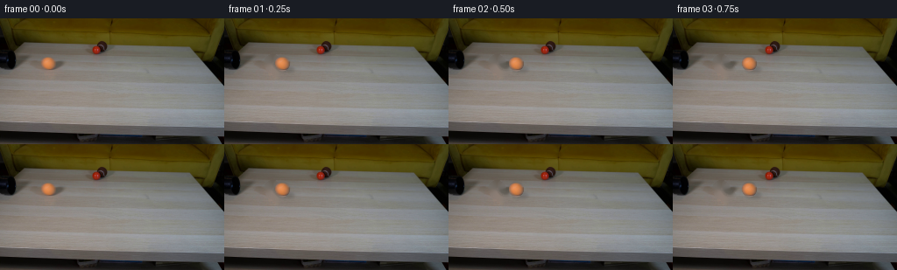
展开代码变化
--- 上一保存版本
+++ 本次保存版本
@@ -0,0 +1,95 @@
+from pathlib import Path
+
+import cv2
+import numpy as np
+
+from artifact_io import save
+
+
+ROOT = Path(__file__).resolve().parent
+WIDTH, HEIGHT = 256, 144
+FRAME_COUNT, FPS = 20, 4
+
+
+def make_clean_plate(frame):
+ """Remove the orange ball and its contact shadow from the first frame."""
+ mask = np.zeros((HEIGHT, WIDTH), np.uint8)
+ cv2.ellipse(mask, (55, 51), (10, 10), 0, 0, 360, 255, -1)
+ cv2.ellipse(mask, (62, 59), (10, 6), -10, 0, 360, 255, -1)
+ return cv2.inpaint(frame, mask, 5, cv2.INPAINT_TELEA)
+
+
+def make_ball_sprite(frame):
+ """Lift the ball while excluding nearly all of its separate cast shadow."""
+ x0, y0, x1, y1 = 44, 40, 67, 63
+ yy, xx = np.mgrid[y0:y1, x0:x1]
+ radius = np.sqrt(((xx - 55.0) / 9.1) ** 2 + ((yy - 51.0) / 9.6) ** 2)
+ alpha = np.clip((1.0 - radius) * 9.0, 0.0, 1.0)
+ alpha = alpha * alpha * (3.0 - 2.0 * alpha)
+ rgb = frame[y0:y1, x0:x1].astype(np.float32)
+ return np.dstack((rgb, alpha[..., None] * 255.0)).astype(np.uint8)
+
+
+def add_shadow(frame, center_x):
+ shadow = np.zeros((HEIGHT, WIDTH), np.float32)
+ cv2.ellipse(
+ shadow,
+ (round(center_x + 5.0), 58),
+ (9, 3),
+ 0,
+ 0,
+ 360,
+ 1.0,
+ -1,
+ )
+ shadow = cv2.GaussianBlur(shadow, (0, 0), 1.8)
+ result = frame.astype(np.float32) * (1.0 - 0.16 * shadow[..., None])
+ return np.clip(result, 0, 255).astype(np.uint8)
+
+
+def paste_ball(frame, sprite, center_x, center_y):
+ height, width = sprite.shape[:2]
+ left = int(round(center_x - 11.0))
+ top = int(round(center_y - 11.0))
+ alpha = sprite[..., 3:4].astype(np.float32) / 255.0
+ roi = frame[top : top + height, left : left + width].astype(np.float32)
+ ball = sprite[..., :3].astype(np.float32)
+ blended = roi * (1.0 - alpha) + ball * alpha
+ frame[top : top + height, left : left + width] = np.clip(blended, 0, 255).astype(
+ np.uint8
+ )
+
+
+def generate():
+ first_bgr = cv2.imread(str(ROOT / "first_frame.png"), cv2.IMREAD_COLOR)
+ if first_bgr is None or first_bgr.shape != (HEIGHT, WIDTH, 3):
+ raise ValueError("first_frame.png must be a 256x144 RGB image")
+ first = first_bgr[..., ::-1].copy()
+
+ clean = make_clean_plate(first)
+ sprite = make_ball_sprite(first)
+ frames = []
+
+ # A gentle constant deceleration gives a physical tabletop roll while still
+ # carrying the ball from the pipe to the right side of the table.
+ velocity = 11.0
+ acceleration = -0.18
+ center_x = 55.0
+ center_y = 51.0
+
+ for index in range(FRAME_COUNT):
+ if index == 0:
+ frames.append(first.copy())
+ else:
+ frame = add_shadow(clean.copy(), center_x)
+ paste_ball(frame, sprite, center_x, center_y)
+ frames.append(frame)
+
+ center_x += velocity
+ velocity += acceleration
+
+ return np.stack(frames)
+
+
+if __name__ == "__main__":
+ save(generate(), ROOT)
候选 02播放与检查图
点击播放 · 原生 RGB 像素

展开代码变化
代码未变化；重新保存了产物。
可观测工具轨迹
实际执行的命令与返回图片。
命令 1exit 0
/bin/bash -c "pwd && rg --files -g 'prompt.txt' -g 'GENERATION_RULES.md' -g 'first_frame.png' -g '"'!node_modules'"'"
命令 2exit 0
/bin/bash -c 'ls -la'
命令 3exit 0
/bin/bash -c 'cat prompt.txt'
命令 4exit 0
/bin/bash -c 'cat GENERATION_RULES.md'
命令 5exit 0
/bin/bash -c "sed -n '1,260p' artifact_io.py"
命令 6exit 0
/bin/bash -c "python - <<'PY'
from PIL import Image
im=Image.open('first_frame.png')
im.crop((25,40,150,95)).resize((1000,440)).save('.tmp/crop_objects.png')
PY"命令 7exit 0
/bin/bash -c "python - <<'PY' import importlib.util for m in ['cv2','numpy','PIL','scipy','imageio']: print(m, bool(importlib.util.find_spec(m))) PY"
命令 8exit 0
/bin/bash -c "python - <<'PY'
from PIL import Image
import numpy as np
im=np.array(Image.open('first_frame.png').convert('RGB'))
print(im.shape, im.min(), im.max())
# list colors/values around ball
for y in range(54,86):
xs=[]
for x in range(38,76):
r,g,b=im[y,x]
if r>100 and r>g*1.25 and g>b*1.1:
xs.append(x)
if xs: print(y,min(xs),max(xs), len(xs))
PY"命令 9exit 0
/bin/bash -c "python - <<'PY'
from PIL import Image
im=Image.open('first_frame.png')
im.crop((32,48,77,92)).resize((720,704),Image.Resampling.NEAREST).save('.tmp/ball_nearest.png')
PY"命令 10exit 0
/bin/bash -c "python - <<'PY'
from PIL import Image
im=Image.open('first_frame.png')
im.crop((0,45,140,100)).resize((1120,440),Image.Resampling.NEAREST).save('.tmp/table_nearest.png')
PY"命令 11exit 0
/bin/bash -c "python - <<'PY'
import cv2, numpy as np
from PIL import Image
im=cv2.imread('first_frame.png')
# inpaint mask
m=np.zeros(im.shape[:2],np.uint8)
cv2.ellipse(m,(55,66),(12,13),0,0,360,255,-1)
cv2.ellipse(m,(62,78),(11,5),0,0,360,255,-1)
for method,name in [(cv2.INPAINT_TELEA,'telea'),(cv2.INPAINT_NS,'ns')]:
b=cv2.inpaint(im,m,3,method)
cv2.imwrite(f'.tmp/bg_{name}.png',b)
# clone source rect x75:101 to x43:69 with feather
b=im.copy(); x0,y0,x1,y1=41,52,70,83; dx=32
src=im[y0:y1,x0+dx:x1+dx].copy()
# color adjust mean edges? direct
alpha=np.ones((y1-y0,x1-x0),np.float32)
# feather 4px
for i in range(4):
a=(i+1)/5
alpha[i,:]=np.minimum(alpha[i,:],a); alpha[-1-i,:]=np.minimum(alpha[-1-i,:],a); alpha[:,i]=np.minimum(alpha[:,i],a); alpha[:,-1-i]=np.minimum(alpha[:,-1-i],a)
b[y0:y1,x0:x1]=(src*alpha[...,None]+b[y0:y1,x0:x1]*(1-alpha[...,None])).astype(np.uint8)
cv2.imwrite('.tmp/bg_clone.png',b)
# montage crops enlarged
crops=[]
for path in ['.tmp/bg_telea.png','.tmp/bg_ns.png','.tmp/bg_clone.png']:
c=cv2.imread(path)[44:91,32:95]
crops.append(cv2.resize(c,None,fx=6,fy=6,interpolation=cv2.INTER_NEAREST))
cv2.imwrite('.tmp/bg_compare.png',np.hstack(crops))
PY"命令 12exit 1
/bin/bash -c "python - <<'PY'
import cv2, numpy as np
im=cv2.imread('first_frame.png')
# masks
m=np.zeros(im.shape[:2],np.uint8)
cv2.ellipse(m,(55,67),(13,14),0,0,360,255,-1)
cv2.ellipse(m,(62,79),(13,6),0,0,360,255,-1)
bg=cv2.inpaint(im,m,4,cv2.INPAINT_TELEA)
cv2.imwrite('.tmp/bg_telea4.png',bg)
# seamless clone source x+38
patch=np.zeros_like(m); patch[48:89,38:76]=255
src=im.copy()
# warp src shifted -38 into position? seamless clone takes src patch at same local coords and center destination.
# create src image where dest area contains content from x+38
shift=np.zeros_like(im); shift[:,:-38]=im[:,38:]
center=(57,68)
for flag,name in [(cv2.NORMAL_CLONE,'normal'),(cv2.MIXED_CLONE,'mixed')]:
out=cv2.seamlessClone(shift,patch,center,flag) if False else None
# correct seamless clone args (src, dst, mask, p, flag)
out=cv2.seamlessClone(im,bg,patch,center,cv2.NORMAL_CLONE)
cv2.imwrite('.tmp/bg_seamless.png',out)
# manual clone feathered
b=im.copy(); x0,y0,x1,y1=39,47,76,90; dx=38
src=im[y0:y1,x0+dx:x1+dx].astype(np.float32)
# brightness match border using gaussian? simple mean diff from surrounding ring
# use low-freq offset: blurred background at source vs dest
bgf=cv2.GaussianBlur(bg,(0,0),6).astype(np.float32)
dst=bg[y0:y1,x0:x1].astype(np.float32)
delta=cv2.GaussianBlur(bg[y0:y1,x0:x1].astype(np.float32),(0,0),5)-cv2.GaussianBlur(im[y0:y1,x0+dx:x1+dx].astype(np.float32),(0,0),5)
src2=np.clip(src+delta,0,255)
h,w=x1-x0,y1-y0
alpha=np.ones((h,w),np.float32)
f=8
for i in range(f):
a=(i+1)/(f+1)
alpha[i,:]=np.minimum(alpha[i,:],a); alpha[-1-i,:]=np.minimum(alpha[-1-i,:],a)
alpha[:,i]=np.minimum(alpha[:,i],a); alpha[:,-1-i]=np.minimum(alpha[:,-1-i],a)
# elliptical inner fully 1, outside? use patch rect but feather
b[y0:y1,x0:x1]=(src2*alpha[...,None]+dst*(1-alpha[...,None])).astype(np.uint8)
cv2.imwrite('.tmp/bg_manual.png',b)
crops=[]
for p in ['.tmp/bg_telea4.png','.tmp/bg_seamless.png','.tmp/bg_manual.png']:
c=cv2.imread(p)[43:93,29:99]
crops.append(cv2.resize(c,None,fx=6,fy=6,interpolation=cv2.INTER_NEAREST))
cv2.imwrite('.tmp/bg_compare2.png',np.hstack(crops))
PY"命令 13exit 0
/bin/bash -c "python - <<'PY'
import cv2, numpy as np
im=cv2.imread('first_frame.png')
m=np.zeros(im.shape[:2],np.uint8)
cv2.ellipse(m,(55,67),(13,14),0,0,360,255,-1)
cv2.ellipse(m,(62,79),(13,6),0,0,360,255,-1)
bg=cv2.inpaint(im,m,4,cv2.INPAINT_TELEA)
cv2.imwrite('.tmp/bg_telea4.png',bg)
patch=np.zeros_like(m); patch[48:89,38:76]=255
out=cv2.seamlessClone(im,bg,patch,(57,68),cv2.NORMAL_CLONE)
cv2.imwrite('.tmp/bg_seamless.png',out)
b=im.copy(); x0,y0,x1,y1=39,47,76,90; dx=38
src=im[y0:y1,x0+dx:x1+dx].astype(np.float32)
dst=bg[y0:y1,x0:x1].astype(np.float32)
delta=cv2.GaussianBlur(bg[y0:y1,x0:x1].astype(np.float32),(0,0),5)-cv2.GaussianBlur(im[y0:y1,x0+dx:x1+dx].astype(np.float32),(0,0),5)
src2=np.clip(src+delta,0,255)
h,w=src2.shape[:2]
alpha=np.ones((h,w),np.float32)
f=8
for i in range(f):
a=(i+1)/(f+1)
alpha[i,:]=np.minimum(alpha[i,:],a); alpha[-1-i,:]=np.minimum(alpha[-1-i,:],a)
alpha[:,i]=np.minimum(alpha[:,i],a); alpha[:,-1-i]=np.minimum(alpha[:,-1-i],a)
b[y0:y1,x0:x1]=(src2*alpha[...,None]+dst*(1-alpha[...,None])).astype(np.uint8)
cv2.imwrite('.tmp/bg_manual.png',b)
crops=[]
for p in ['.tmp/bg_telea4.png','.tmp/bg_seamless.png','.tmp/bg_manual.png']:
c=cv2.imread(p)[43:93,29:99]
crops.append(cv2.resize(c,None,fx=6,fy=6,interpolation=cv2.INTER_NEAREST))
cv2.imwrite('.tmp/bg_compare2.png',np.hstack(crops))
PY"命令 14exit 0
/bin/bash -c "python - <<'PY'
import cv2,numpy as np
im=cv2.imread('first_frame.png')
# analyze approximate pipe contours left
hsv=cv2.cvtColor(im,cv2.COLOR_BGR2HSV)
for x in range(0,25):
ys=np.where((im[:,x].mean(1)<55))[0]
if len(ys): print(x,ys.min(),ys.max())
PY"命令 15exit 0
/bin/bash -c "python - <<'PY'
from PIL import Image
im=Image.open('first_frame.png')
im.crop((0,35,35,100)).resize((350,650),Image.Resampling.NEAREST).save('.tmp/pipe_nearest.png')
PY"命令 16exit 0
/bin/bash -c "python - <<'PY'
from PIL import Image
import numpy as np
im=np.array(Image.open('first_frame.png').convert('RGB'))
# sample central and shadow
for y,x in [(64,52),(60,50),(66,56),(70,57),(74,57),(78,58),(67,44),(68,66),(69,57),(63,49)]: print((x,y),im[y,x])
# determine bbox of strong orange
r,g,b=im[:,:,0],im[:,:,1],im[:,:,2]
m=(r>130)&(r>g*1.35)&(g>b*1.2)&(np.indices(r.shape)[1]>30)&(np.indices(r.shape)[1]<85)&(np.indices(r.shape)[0]>45)&(np.indices(r.shape)[0]<90)
ys,xs=np.where(m); print('bbox',xs.min(),xs.max(),ys.min(),ys.max(), 'centroid',xs.mean(),ys.mean())
PY"命令 17exit 0
/bin/bash -c "python - <<'PY'
from PIL import Image
import numpy as np
im=np.array(Image.open('first_frame.png').convert('RGB'))
for y in range(48,85):
row=[]
for x in range(39,72):
r,g,b=im[y,x]
if r>g*1.2 and r>b*1.3 and r>90: c='O'
elif r<g*1.02 and g>b*1.02: c='T'
elif max(r,g,b)<90: c='d'
else: c='.'
row.append(c)
print(f'{y:02d}', ''.join(row))
PY"命令 18exit 0
/bin/bash -c "python - <<'PY'
from PIL import Image
im=Image.open('first_frame.png')
for method,name in [(Image.Resampling.NEAREST,'near'),(Image.Resampling.BICUBIC,'bic')]:
im.crop((43,42,69,64)).resize((520,440),method).save(f'.tmp/ball_{name}2.png')
PY"命令 19exit 0
/bin/bash -c "python - <<'PY'
from PIL import Image
import numpy as np
im=np.array(Image.open('first_frame.png').convert('RGB'))
for y in range(45,60):
print(y, [tuple(im[y,x]) for x in range(46,64,2)])
PY"命令 20exit 0
/bin/bash -c "python - <<'PY'
from PIL import Image
import numpy as np
im=np.array(Image.open('first_frame.png').convert('RGB'))
for y in range(63,80):
print(y, [int(im[y,x].mean()) for x in range(40,76)])
PY"命令 21exit 0
/bin/bash -c "python - <<'PY'
from PIL import Image
import numpy as np
im=np.array(Image.open('first_frame.png').convert('RGB'))
for y in [60,62,64,66,68,70,72,74,76,78,80]:
vals=[]
for x in range(44,70):
r,g,b=map(int,im[y,x]); d=0.299*r+0.587*g+0.114*b
vals.append(int(d))
print(y, min(vals), max(vals), sum(vals)//len(vals), vals)
PY"命令 22exit 0
/bin/bash -c "python - <<'PY'
import cv2, numpy as np
from PIL import Image
im=cv2.imread('first_frame.png')
h,w=im.shape[:2]
# remove ball plus soft cast shadow
mask=np.zeros((h,w),np.uint8)
cv2.ellipse(mask,(55,51),(10,10),0,0,360,255,-1)
cv2.ellipse(mask,(61,57),(8,5),-15,0,360,255,-1)
bg=cv2.inpaint(im,mask,4,cv2.INPAINT_TELEA)
# slight median only inside mask edge? preserve surrounding
# sprite patch
cx,cy=55.0,51.0
x0,y0,x1,y1=44,40,67,63
patch=im[y0:y1,x0:x1].astype(np.float32)
Y,X=np.mgrid[y0:y1,x0:x1]
# anti-aliased circle with soft edge
r=np.sqrt((X-cx)**2+(Y-cy)**2)
alpha=np.clip((8.7-r)/1.15,0,1)
alpha=alpha*alpha*(3-2*alpha)
# clean alpha tiny isolated pixels? circular enough
rgba=np.dstack([patch,alpha[...,None]*255]).astype(np.uint8)
cv2.imwrite('.tmp/base_clean.png',bg)
cv2.imwrite('.tmp/sprite.png',rgba)
# create candidates
fps=4; n=20
vel0=10.4; acc=-0.22
pos=[]; x=55.0; v=vel0
for i in range(n):
pos.append(x); x += v; v += acc
print(pos)
frames=[]
for i in range(n):
if i==0:
frame=im.copy()
else:
frame=bg.copy()
bx=pos[i]; by=51.0
# shadow multiply, two layers
sh=np.zeros_like(frame,np.float32)
# broad ellipse offset
tmp=np.zeros((h,w),np.float32)
cv2.ellipse(tmp,(round(bx+4.5),round(by+6.2)),(9,3),(0),0,360,1.0,-1)
tmp=cv2.GaussianBlur(tmp,(0,0),1.8)
frame=(frame.astype(np.float32)*(1-0.17*tmp[...,None])).clip(0,255).astype(np.uint8)
tmp2=np.zeros((h,w),np.float32)
cv2.ellipse(tmp2,(round(bx+2.0),round(by+7.0)),(6,2),(0),0,360,1.0,-1)
tmp2=cv2.GaussianBlur(tmp2,(0,0),1.2)
frame=(frame.astype(np.float32)*(1-0.10*tmp2[...,None])).clip(0,255).astype(np.uint8)
# paste sprite subpixel using affine
dx=bx-cx; dy=by-cy
M=np.float32([[1,0,dx],[0,1,dy]])
warped=cv2.warpAffine(rgba,M,(w,h),flags=cv2.INTER_LINEAR,borderMode=cv2.BORDER_CONSTANT,borderValue=(0,0,0,0))
a=warped[...,3:4].astype(np.float32)/255
frame=(frame.astype(np.float32)*(1-a)+warped[...,:3].astype(np.float32)*a).clip(0,255).astype(np.uint8)
frames.append(frame)
# montage
sheet=np.full((2*144+20,4*256,3),25,np.uint8)
for j,idx in enumerate([0,3,7,11,15,19]):
row=j//4; col=j%4
sheet[row*164:row*164+144,col*256:(col+1)*256]=frames[idx]
cv2.putText(sheet,f'{idx}',(col*256+5,row*164+15),cv2.FONT_HERSHEY_SIMPLEX,.4,(255,255,255),1,cv2.LINE_AA)
cv2.imwrite('.tmp/candidate_sheet.png',sheet)
# frame0 diff
print('frame0 identical',np.array_equal(frames[0],im),'bg diff',np.abs(bg.astype(int)-im.astype(int)).max())
PY"命令 23exit 0
/bin/bash -c "python - <<'PY'
import cv2
im=cv2.imread('first_frame.png')
c=im[40:65,42:70]
cv2.imwrite('.tmp/ball_orig_crop.png',cv2.resize(c,None,fx=10,fy=10,interpolation=cv2.INTER_NEAREST))
c2=cv2.imread('.tmp/sprite.png')[0:25,0:28]
cv2.imwrite('.tmp/sprite_crop.png',cv2.resize(c2,None,fx=10,fy=10,interpolation=cv2.INTER_NEAREST))
PY"命令 24exit 0
/bin/bash -c "python - <<'PY'
import cv2, numpy as np
im=cv2.imread('first_frame.png')
# circular sprite centered 55,51; use full radius 10; mask circle antialias
Y,X=np.mgrid[39:64,43:68]
cx,cy=55,51
r=np.sqrt((X-cx)**2+(Y-cy)**2)
alpha=np.clip((10.0-r)/1.3,0,1)
# remove shadow darkness: sprite already has shadow mostly to lower right, but circle only
alpha=alpha*alpha*(3-2*alpha)
# We can estimate background under sprite? don't need; circle crop includes shadow inside bottom-right"'! Fix by only compositing pixels with radius<9.2
alpha*=np.clip((9.4-r)/1.2,0,1)
rgba=np.dstack([im[39:64,43:68].astype(np.float32),alpha[...,None]*255]).astype(np.uint8)
cv2.imwrite('"'.tmp/sprite2.png',rgba)
# create compare frame at x100 y51 using clean bg; regenerate clean base
mask=np.zeros(im.shape[:2],np.uint8)
cv2.ellipse(mask,(55,51),(10,10),0,0,360,255,-1)
cv2.ellipse(mask,(61,57),(8,5),-15,0,360,255,-1)
bg=cv2.inpaint(im,mask,4,cv2.INPAINT_TELEA)
for x,sp in [(100,'.tmp/sprite2.png'),(100,'.tmp/sprite.png')]:
f=bg.copy()
# shadow
sh=np.zeros(f.shape[:2],np.float32); cv2.ellipse(sh,(x+5,58),(9,3),0,0,360,1,-1); sh=cv2.GaussianBlur(sh,(0,0),1.8)
f=(f.astype(np.float32)*(1-.17*sh[...,None])).clip(0,255).astype(np.uint8)
imsp=cv2.imread(sp,cv2.IMREAD_UNCHANGED); h,w=imsp.shape[:2]
a=imsp[...,3:4].astype(np.float32)/255
roi=f[39:39+h, x-12:x-12+w].astype(np.float32)
f[39:39+h,x-12:x-12+w]=(roi*(1-a)+imsp[...,:3].astype(np.float32)*a).clip(0,255).astype(np.uint8)
name='s2' if 'sprite2' in sp else 's1'
cv2.imwrite(f'.tmp/test_{name}.png',f)
crops=[]
for p in ['.tmp/test_s1.png','.tmp/test_s2.png']:
crops.append(cv2.resize(cv2.imread(p)[40:64,86:114],None,fx=12,fy=12,interpolation=cv2.INTER_NEAREST))
cv2.imwrite('.tmp/sprite_compare.png',np.hstack(crops))
PY"命令 25exit 0
/bin/bash -c "python - <<'PY'
import cv2, numpy as np
im=cv2.imread('first_frame.png')
for p in ['.tmp/test_s1.png','.tmp/test_s2.png']:
x=cv2.imread(p)
cv2.imwrite(p.replace('.png','_large.png'),cv2.resize(x[36:70,84:118],None,fx=10,fy=10,interpolation=cv2.INTER_CUBIC))
PY"命令 26exit 0
/bin/bash -c "python - <<'PY'
import cv2, numpy as np
im=cv2.imread('first_frame.png')
# Sprite: take circle but neutralize shadow by ratio to fitted background? use only upper 95% circle and synthetic lower edge.
# The ball's main shading is on upper circle; bottom row shadow contamination only y>=56, but ball also y>=57.
# build sprite from ellipse radius 9, but alpha circle radius 9.2 centered 55,51.5
Y,X=np.mgrid[40:63,44:67]
cx,cy=55,51
# actual ellipse x radius 9, y radius 10? sample bbox: x46-64, y42-61
r=np.sqrt(((X-cx)/9.1)**2+((Y-cy)/9.6)**2)
alpha=np.clip((1.0-r)*9.0,0,1)
alpha=alpha*alpha*(3-2*alpha)
# use original but limit to alpha; color will contain shadow only at boundary where alpha small
rgba=np.dstack([im[40:63,44:67].astype(np.float32),alpha[...,None]*255]).astype(np.uint8)
cv2.imwrite('.tmp/sprite3.png',rgba)
# output one frame paste with proper transform manually
mask=np.zeros(im.shape[:2],np.uint8); cv2.ellipse(mask,(55,51),(10,10),0,0,360,255,-1); cv2.ellipse(mask,(61,57),(8,5),-15,0,360,255,-1)
bg=cv2.inpaint(im,mask,4,cv2.INPAINT_TELEA)
f=bg.copy(); x=100; h,w=rgba.shape[:2]
a=rgba[...,3:4].astype(np.float32)/255
roi=f[40:40+h,x-11:x-11+w].astype(np.float32)
f[40:40+h,x-11:x-11+w]=(roi*(1-a)+rgba[...,:3].astype(np.float32)*a).astype(np.uint8)
cv2.imwrite('.tmp/test_s3.png',f)
cv2.imwrite('.tmp/test_s3_large.png',cv2.resize(f[35:70,82:120],None,fx=10,fy=10,interpolation=cv2.INTER_CUBIC))
PY"命令 27exit 0
/bin/bash -c "python - <<'PY'
import cv2
im=cv2.imread('.tmp/test_s3.png')
cv2.imwrite('.tmp/test_s3_crop.png',cv2.resize(im[38:67,87:115],None,fx=12,fy=12,interpolation=cv2.INTER_NEAREST))
PY"命令 28exit 0
/bin/bash -c "python - <<'PY'
import cv2,numpy as np
im=cv2.imread('first_frame.png')
# print shadow difference relative to local estimated base, using median from rows 64-70
for y in range(54,72):
vals=[]
for x in range(40,78):
r,g,b=im[y,x]
vals.append((int(r),int(g),int(b)))
print(y, 'mean', tuple(np.mean(vals,axis=0).round().astype(int)), 'min', tuple(np.min(vals,axis=0)), 'max',tuple(np.max(vals,axis=0)))
PY"命令 29exit 0
/bin/bash -c "python - <<'PY'
import cv2, numpy as np
im=cv2.imread('first_frame.png')
Y,X=np.mgrid[40:63,44:67]; cx,cy=55,51
r=np.sqrt(((X-cx)/9.1)**2+((Y-cy)/9.6)**2)
alpha=np.clip((1.0-r)*9.0,0,1); alpha=alpha*alpha*(3-2*alpha)
rgba=np.dstack([im[40:63,44:67].astype(np.float32),alpha[...,None]*255]).astype(np.uint8)
cv2.imwrite('.tmp/sprite3.png',rgba)
# clean bg mask larger and use two-pass inpaint
mask=np.zeros(im.shape[:2],np.uint8); cv2.ellipse(mask,(55,51),(10,10),0,0,360,255,-1); cv2.ellipse(mask,(62,59),(10,6),-10,0,360,255,-1)
bg=cv2.inpaint(im,mask,5,cv2.INPAINT_TELEA)
cv2.imwrite('.tmp/base_clean3.png',bg)
# candidate full
f=bg.copy(); x=100
# shadow only 2 layers
sh=np.zeros(f.shape[:2],np.float32); cv2.ellipse(sh,(x+5,58),(9,3),0,0,360,1,-1); sh=cv2.GaussianBlur(sh,(0,0),1.8)
f=(f.astype(np.float32)*(1-.16*sh[...,None])).clip(0,255).astype(np.uint8)
h,w=rgba.shape[:2]; a=rgba[...,3:4].astype(np.float32)/255
roi=f[40:40+h,x-11:x-11+w].astype(np.float32)
f[40:40+h,x-11:x-11+w]=(roi*(1-a)+rgba[...,:3].astype(np.float32)*a).clip(0,255).astype(np.uint8)
cv2.imwrite('.tmp/test_s4.png',f)
cv2.imwrite('.tmp/test_s4_crop.png',cv2.resize(f[36:72,80:122],None,fx=10,fy=10,interpolation=cv2.INTER_NEAREST))
# show bg original crop
cv2.imwrite('.tmp/base_clean_crop.png',cv2.resize(bg[36:72,30:72],None,fx=10,fy=10,interpolation=cv2.INTER_NEAREST))
PY"命令 30exit 0
/bin/bash -c "python - <<'PY'
import cv2,numpy as np
im=cv2.imread('first_frame.png')
# compare clean base to source same area far right x90
for p in ['first_frame.png','.tmp/base_clean3.png']:
x=cv2.imread(p)
print(p, x[60:71,40:78].mean(axis=(0,1)), x[60:71,90:128].mean(axis=(0,1)))
PY"命令 31exit 0
/bin/bash -c "python - <<'PY'
import cv2,numpy as np
im=cv2.imread('first_frame.png')
# use image at x70 shifted left as texture base; estimate correction from row/col smooth background? Copy with gradient compensation
x0,y0,x1,y1=40,42,76,70; dx=39
src=im[y0:y1,x0+dx:x1+dx].astype(np.float32)
dst=im[y0:y1,x0:x1].astype(np.float32)
# global mean color difference excluding ball mask
base=im.copy()
# gaussian correction using large blur of bg vs src
low_dst=cv2.GaussianBlur(dst,(0,0),15)
low_src=cv2.GaussianBlur(src,(0,0),15)
src2=src+(low_dst-low_src)
# feather boundaries only
h,w=src2.shape[:2]
a=np.ones((h,w),np.float32); f=10
for i in range(f):
v=(i+1)/(f+1); a[i,:]=np.minimum(a[i,:],v); a[-1-i,:]=np.minimum(a[-1-i,:],v); a[:,i]=np.minimum(a[:,i],v); a[:,-1-i]=np.minimum(a[:,-1-i],v)
base[y0:y1,x0:x1]=(src2*a[...,None]+dst*(1-a[...,None])).astype(np.uint8)
cv2.imwrite('.tmp/base_clone2.png',base)
cv2.imwrite('.tmp/base_clone2_crop.png',cv2.resize(base[36:72,30:72],None,fx=10,fy=10,interpolation=cv2.INTER_NEAREST))
PY"命令 32exit 0
/bin/bash -c "python - <<'PY'
from PIL import Image
import numpy as np
im=np.array(Image.open('first_frame.png').convert('RGB'))
# print RGB line around ball to locate border
for y in [41,42,43,44,60,61,62,63]:
print('y',y,[(x,tuple(im[y,x])) for x in range(44,68,2)])
PY"命令 33exit 0
/bin/bash -c "python - <<'PY'
import cv2,numpy as np
im=cv2.imread('first_frame.png')
for dx in [35,45,55,65]:
x0,y0,x1,y1=37,39,79,72
src=im[y0:y1,x0+dx:x1+dx].astype(np.float32)
dst=im[y0:y1,x0:x1].astype(np.float32)
# match global means and low frequency. Use low blur diff.
low_dst=cv2.GaussianBlur(dst,(0,0),12)
low_src=cv2.GaussianBlur(src,(0,0),12)
src2=np.clip(src+(low_dst-low_src),0,255)
h,w=src2.shape[:2]
a=np.ones((h,w),np.float32); f=6
for i in range(f):
v=(i+1)/(f+1); a[i,:]=np.minimum(a[i,:],v); a[-1-i,:]=np.minimum(a[-1-i,:],v); a[:,i]=np.minimum(a[:,i],v); a[:,-1-i]=np.minimum(a[:,-1-i],v)
out=im.copy(); out[y0:y1,x0:x1]=(src2*a[...,None]+dst*(1-a[...,None])).astype(np.uint8)
cv2.imwrite(f'.tmp/clone_dx{dx}.png',out)
# montage crops at 8x
cs=[]
for dx in [35,45,55,65]: cs.append(cv2.resize(cv2.imread(f'.tmp/clone_dx{dx}.png')[36:75,28:88],None,fx=8,fy=8,interpolation=cv2.INTER_NEAREST))
cv2.imwrite('.tmp/clone_compare.png',np.hstack(cs))
PY"命令 34exit 0
/bin/bash -c "python - <<'PY'
import cv2,numpy as np
im=cv2.imread('first_frame.png')
# mask 5x5 inpainting? cv2 has no radius small, use rectangular fill from x75
out=im.copy(); out[43:62,46:65]=im[43:62,76:95]
cv2.imwrite('.tmp/rectfill.png',out)
cv2.imwrite('.tmp/rectfill_crop.png',cv2.resize(out[36:75,28:88],None,fx=8,fy=8,interpolation=cv2.INTER_NEAREST))
# calculate patch offset variance to neighboring texture
PY"命令 35exit 0
/bin/bash -c 'python generate.py'
命令 36exit 0
/bin/bash -c "python - <<'PY'
from PIL import Image
import numpy as np, json, os
first=np.array(Image.open('first_frame.png').convert('RGB'))
frame0=np.array(Image.open('frames/00.png').convert('RGB'))
print('frame0 identical:', np.array_equal(first,frame0))
print('frame files:', len([x for x in os.listdir('frames') if x.endswith('.png')]))
print('pixels:', np.load('pixels.npz')['pixels'].shape)
print('html bytes:', os.path.getsize('index.html'))
PY"命令 37exit 0
/bin/bash -c "python - <<'PY'
from PIL import Image
import numpy as np
a=np.array(Image.open('first_frame.png').convert('RGB'))
b=np.array(Image.open('frames/00.png').convert('RGB'))
print(a.shape,b.shape,a.dtype,b.dtype)
d=np.abs(a.astype(int)-b.astype(int)); print(d.max(),np.count_nonzero(d),np.mean(d))
ys,xs=np.where(np.any(d,axis=2)); print(xs.min(),xs.max(),ys.min(),ys.max())
PY"命令 38exit 0
/bin/bash -c "python - <<'PY'
import cv2
im=cv2.imread('first_frame.png')
print(im[0,0],cv2.imread('frames/00.png')[0,0])
PY"命令 39exit 0
/bin/bash -c 'python generate.py'
命令 40exit 0
/bin/bash -c "python - <<'PY'
from PIL import Image
import numpy as np, os
a=np.array(Image.open('first_frame.png').convert('RGB'))
b=np.array(Image.open('frames/00.png').convert('RGB'))
print('frame0 identical:',np.array_equal(a,b), 'max diff:',np.abs(a.astype(int)-b.astype(int)).max())
print('pixel tensor:',np.load('pixels.npz')['pixels'].shape)
print('frames:',len([x for x in os.listdir('frames') if x.endswith('.png')]))
PY"命令 41exit 0
/bin/bash -c "python - <<'PY'
from PIL import Image
im=Image.open('frames/10.png')
im.crop((130,38,185,70)).resize((660,384),Image.Resampling.NEAREST).save('.tmp/roll_crop.png')
PY"命令 42exit 0
/bin/bash -c "python - <<'PY'
from PIL import Image
import numpy as np
for i in [1,5,10,15,19]:
a=np.array(Image.open(f'frames/{i:02d}.png').convert('RGB'))
r,g,b=a[:,:,0],a[:,:,1],a[:,:,2]
m=(r>120)&(r>g*1.3)&(g>b*1.15)
ys,xs=np.where(m)
# restrict table ball
sel=(ys>35)&(ys<75)
xs,ys=xs[sel],ys[sel]
print(i, xs.min() if len(xs) else None,xs.max() if len(xs) else None,ys.min() if len(ys) else None,ys.max() if len(ys) else None, round(xs.mean(),1) if len(xs) else None)
PY"命令 43exit 0
/bin/bash -c "python - <<'PY'
import cv2,numpy as np
im=cv2.imread('first_frame.png')
mask=np.zeros(im.shape[:2],np.uint8); cv2.ellipse(mask,(55,51),(10,10),0,0,360,255,-1); cv2.ellipse(mask,(62,59),(10,6),-10,0,360,255,-1)
bg=cv2.inpaint(im,mask,5,cv2.INPAINT_TELEA)
f=bg.copy(); x=100
# use exact original crop moved, no transparency? center source 55,51 => x shift 45; rectangle 44:67,40:63 to 89:112
f[40:63,89:112]=im[40:63,44:67]
cv2.imwrite('.tmp/paste_orig.png',f)
cv2.imwrite('.tmp/paste_orig_crop.png',cv2.resize(f[34:74,76:122],None,fx=10,fy=10,interpolation=cv2.INTER_NEAREST))
PY"命令 44exit 0
/bin/bash -c "python - <<'PY'
import cv2
im=cv2.imread('.tmp/test_s4.png')
cv2.imwrite('.tmp/test_s4_crop2.png',cv2.resize(im[35:74,82:124],None,fx=10,fy=10,interpolation=cv2.INTER_NEAREST))
PY"命令 45exit 0
/bin/bash -c "python - <<'PY'
import cv2,numpy as np
im=cv2.imread('first_frame.png')
# explore different centers/radii, montage against original
Y,X=np.mgrid[0:144,0:256]
for cxn,cyn,rxn,ryn,sh in [(55,51,9.0,9.7,8),(55,51,8.6,9.3,8),(55,51,8.3,9.0,8),(55,51,8.0,8.8,8)]:
r=np.sqrt(((X-cxn)/rxn)**2+((Y-cyn)/ryn)**2)
a=np.clip((1.0-r)*sh,0,1); a=a*a*(3-2*a)
rgba=np.dstack([im.astype(np.float32),a[...,None]*255]).astype(np.uint8)
# save full rgba
cv2.imwrite(f'.tmp/spr_{rxn}.png',rgba)
# Generate on clean bg at x100
mask=np.zeros((144,256),np.uint8); cv2.ellipse(mask,(55,51),(10,10),0,0,360,255,-1); cv2.ellipse(mask,(62,59),(10,6),-10,0,360,255,-1)
bg=cv2.inpaint(im,mask,5,cv2.INPAINT_TELEA)
ims=[]
for rxn in [9.0,8.6,8.3,8.0]:
sp=cv2.imread(f'.tmp/spr_{rxn}.png',cv2.IMREAD_UNCHANGED)
a=sp[...,3:4].astype(np.float32)/255
roi=bg[40:63,89:112].astype(np.float32)
out=roi*(1-a[40:63,89:112])+sp[40:63,89:112,:3].astype(np.float32)*a[40:63,89:112]
f=bg.copy(); f[40:63,89:112]=out.astype(np.uint8)
ims.append(cv2.resize(f[36:70,84:118],None,fx=12,fy=12,interpolation=cv2.INTER_NEAREST))
cv2.imwrite('.tmp/sprite_tune.png',np.hstack(ims))
PY"命令 46exit 0
/bin/bash -c "python - <<'PY'
import cv2,numpy as np
sp=cv2.imread('.tmp/spr_9.0.png',cv2.IMREAD_UNCHANGED)
a=sp[...,3]
print(np.unique(a), np.count_nonzero(a), a.shape)
print(a[40:63,89:112].min(),a[40:63,89:112].max(),np.count_nonzero(a[40:63,89:112]))
print(a[40,89],a[41,90],a[42,91],a[51,100])
PY"命令 47exit 0
/bin/bash -c "python - <<'PY'
import cv2,numpy as np
sp=cv2.imread('.tmp/spr_9.0.png',cv2.IMREAD_UNCHANGED); bg=cv2.imread('.tmp/base_clean3.png')
a=sp[...,3:4].astype(np.float32)/255
f=bg.copy(); roi=f[40:63,89:112].astype(np.float32)
f[40:63,89:112]=(roi*(1-a[40:63,89:112])+sp[40:63,89:112,:3].astype(np.float32)*a[40:63,89:112]).astype(np.uint8)
cv2.imwrite('.tmp/spr9_frame.png',f)
# mask count in crop
print(np.count_nonzero(a[40:63,89:112]>0.01))
print(a[40:63,89:112,0].max())
PY"命令 48exit 0
/bin/bash -c "python - <<'PY'
import cv2,numpy as np
sp=cv2.imread('.tmp/spr_9.0.png',cv2.IMREAD_UNCHANGED)
ys,xs=np.where(sp[...,3]>0)
print(xs.min(),xs.max(),ys.min(),ys.max())
PY"命令 49exit 0
/bin/bash -c "python - <<'PY'
import cv2,numpy as np
sp=cv2.imread('.tmp/spr_9.0.png',cv2.IMREAD_UNCHANGED); bg=cv2.imread('.tmp/base_clean3.png')
f=bg.copy(); x=100; left=x-11
a=sp[...,3:4].astype(np.float32)/255
roi=f[40:63,left:left+23].astype(np.float32)
f[40:63,left:left+23]=(roi*(1-a[40:63,left:left+23])+sp[40:63,left:left+23,:3].astype(np.float32)*a[40:63,left:left+23]).astype(np.uint8)
cv2.imwrite('.tmp/spr9_frame.png',f)
cv2.imwrite('.tmp/spr9_frame_crop.png',cv2.resize(f[34:73,80:120],None,fx=10,fy=10,interpolation=cv2.INTER_NEAREST))
PY"命令 50exit 0
/bin/bash -c "python - <<'PY'
import cv2
im=cv2.imread('frames/10.png')
print(im.shape)
cv2.imwrite('.tmp/frame10_crop.png',cv2.resize(im[35:73,130:180],None,fx=10,fy=10,interpolation=cv2.INTER_NEAREST))
PY"命令 51exit 0
/bin/bash -c "python - <<'PY'
from PIL import Image
for i in [1,2,4,8]:
im=Image.open(f'frames/{i:02d}.png')
im.crop((36,36,82,74)).resize((460,380),Image.Resampling.NEAREST).save(f'.tmp/oldspot_{i:02d}.png')
PY"命令 52exit 0
/bin/bash -c "python - <<'PY'
import cv2,numpy as np
im=cv2.imread('first_frame.png')
# inpainting with different radius, visualize source crop
for r in [1,2,3,4,5,7]:
mask=np.zeros((144,256),np.uint8); cv2.ellipse(mask,(55,51),(10,10),0,0,360,255,-1); cv2.ellipse(mask,(62,59),(10,6),-10,0,360,255,-1)
bg=cv2.inpaint(im,mask,r,cv2.INPAINT_TELEA)
cv2.imwrite(f'.tmp/inpaint_r{r}.png',bg)
# metrics patch vs neighbor patches
patch=bg[40:70,36:76].astype(float)
print(r, patch.std(axis=(0,1)))
PY"视觉工具实际返回图片 1
视觉工具实际返回图片 2
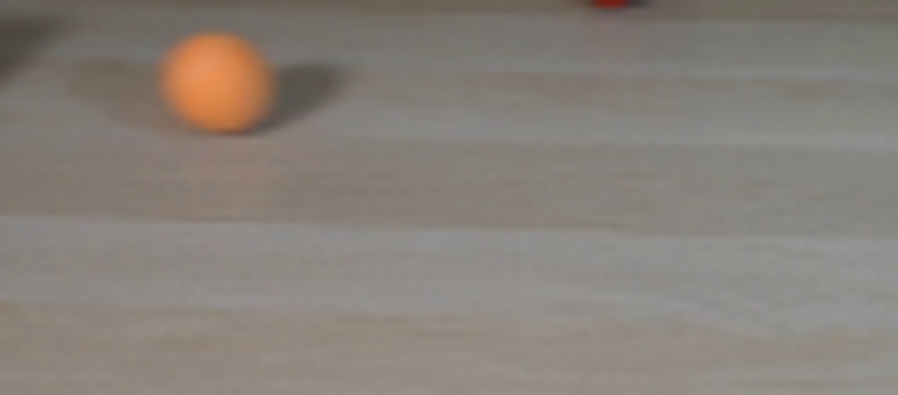
视觉工具实际返回图片 3
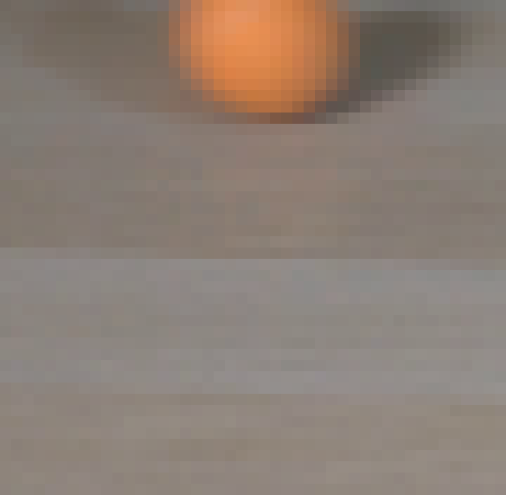
视觉工具实际返回图片 4
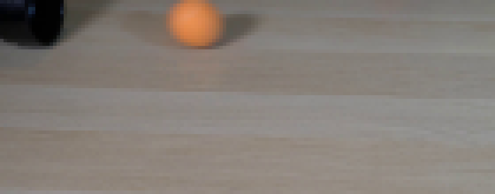
视觉工具实际返回图片 5
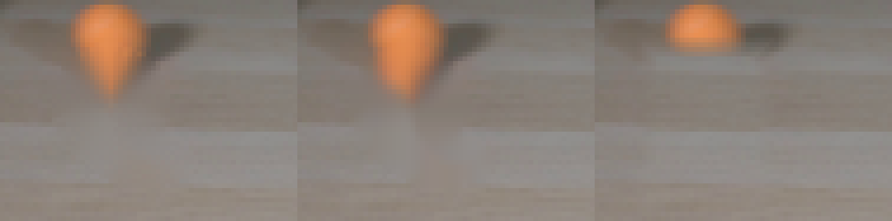
视觉工具实际返回图片 6
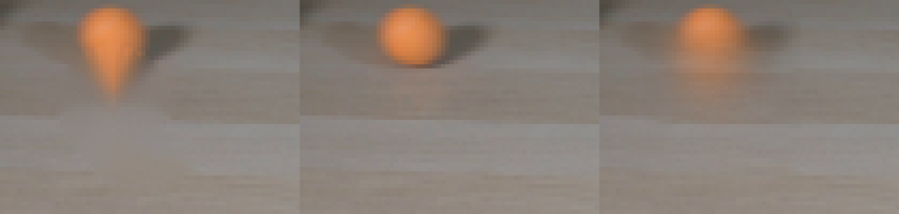
视觉工具实际返回图片 7
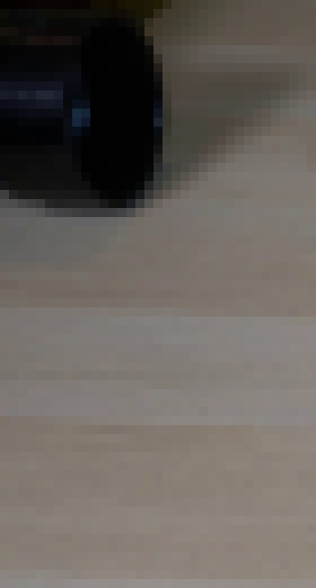
视觉工具实际返回图片 8
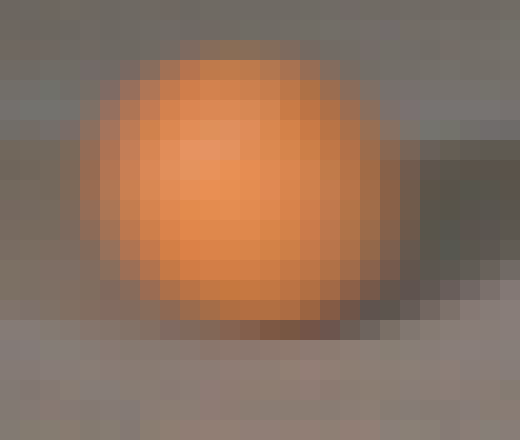
视觉工具实际返回图片 9
视觉工具实际返回图片 10
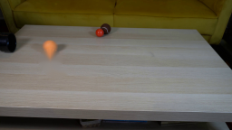
视觉工具实际返回图片 11
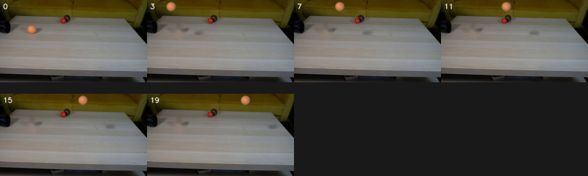
视觉工具实际返回图片 12
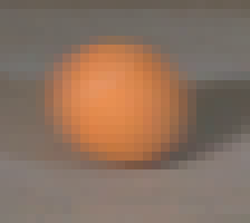
视觉工具实际返回图片 13
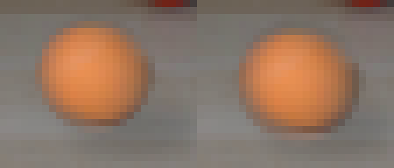
视觉工具实际返回图片 14
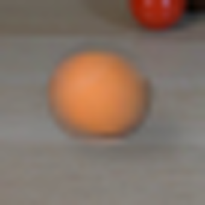
视觉工具实际返回图片 15
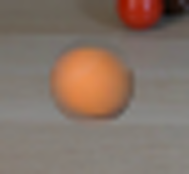
视觉工具实际返回图片 16
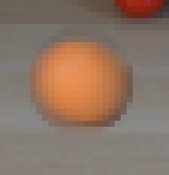
视觉工具实际返回图片 17
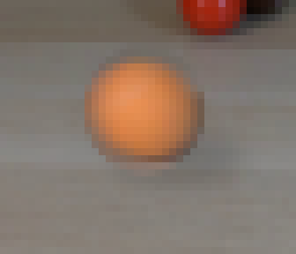
视觉工具实际返回图片 18
视觉工具实际返回图片 19
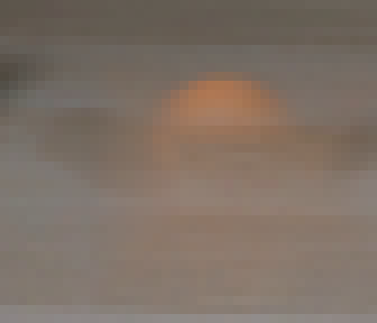
视觉工具实际返回图片 20
视觉工具实际返回图片 21
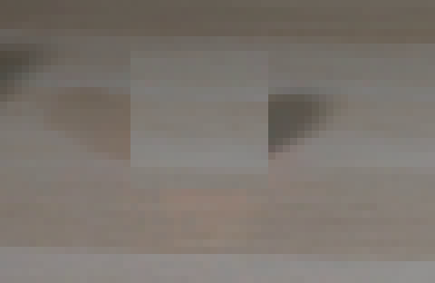
视觉工具实际返回图片 22
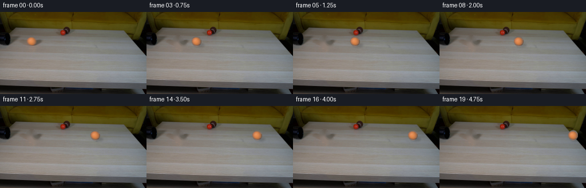
视觉工具实际返回图片 23
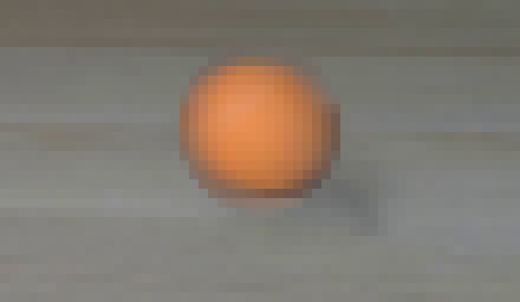
视觉工具实际返回图片 24
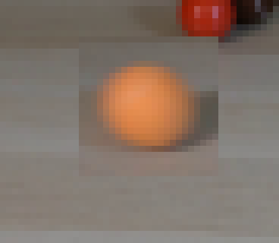
视觉工具实际返回图片 25
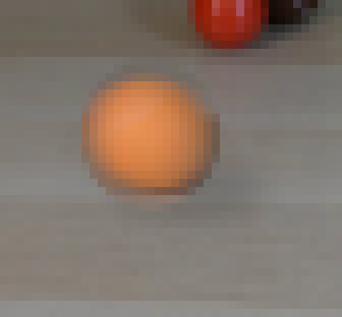
视觉工具实际返回图片 26
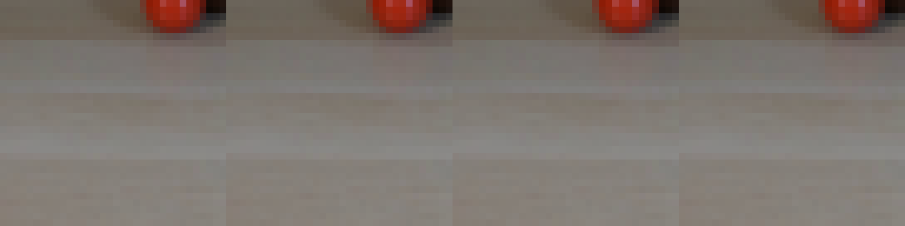
视觉工具实际返回图片 27
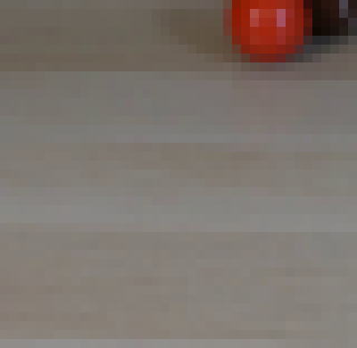
视觉工具实际返回图片 28
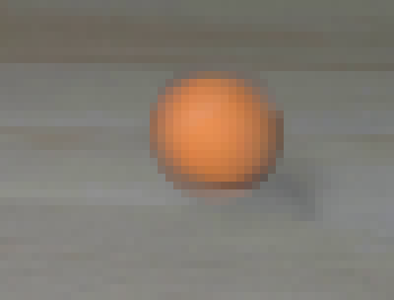
视觉工具实际返回图片 29
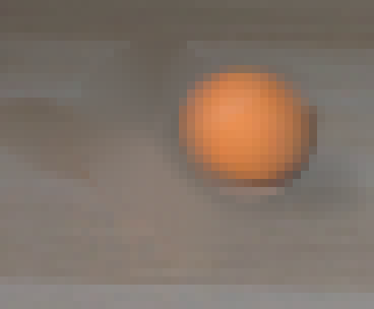
视觉工具实际返回图片 30
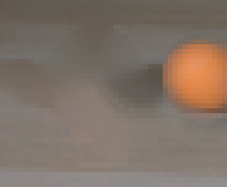
视觉工具实际返回图片 31
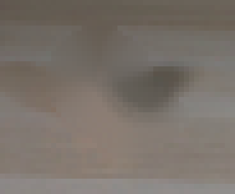
保存候选 2 份；完成命令 52 次；可验证图片返回 31 张。原始 API 响应与完整日志保留在本地。